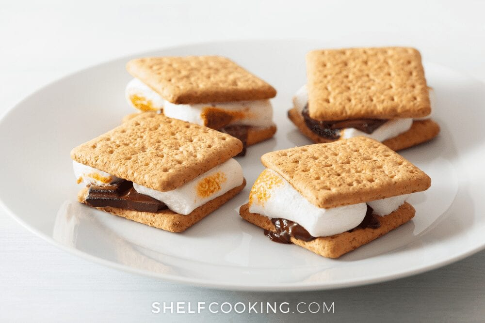

S'mores

Description
What's the most fitting fall/winter treat? The s'more is the most fitting sweet treat in all of it's gooey goodness.
Ingredients
- 2 graham crackers
- 2 large marshmallows
- 1 hershey chocolate bar
Steps
- Break Crackers in half, as well as the chocolate placing that half chocolate pieces one 2 halves of the graham crackers.
- Top each with marshmallows. Placing on a paper towel.
- Microwave 10 seconds at a time until the marshmallows start to swell.
- Place the top cracker over the marshmallow.
- Let stand for 1 minute to soften chocolate.